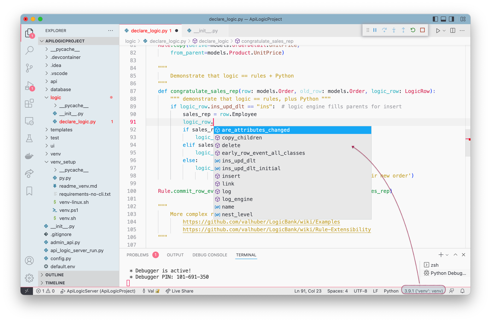

Using Logic
 TL;DR - Using Logic: Understand functions vs. lambda, logic_row
TL;DR - Using Logic: Understand functions vs. lambda, logic_row
For constraints / formulas that require an expression, you can use lambdas or functions.
Functions have a logic_row arguments, providing access to old/new row, verb, etc.
Declaration and Activation
Declared rules are automatically activated by api_logic_server_run.py when it starts the server. For more information, please see Project Operation.
Function vs. Lambda
Constraint and Formula rules have arguments for providing an expression. There are two ways to do this.
For simple expressions, provide a lambda (inline) function, e.g.:
Rule.formula(derive=models.OrderDetail.Amount, # compute price * qty
as_expression=lambda row: row.UnitPrice * row.Quantity)
To get access to old_row and logic_row, specify a function, e.g.:
"""
Demonstrate that logic == Rules + Python (for extensibility)
"""
def congratulate_sales_rep(row: models.Order, old_row: models.Order, logic_row: LogicRow):
""" use events for sending email, messages, etc. """
if logic_row.ins_upd_dlt == "ins": # logic engine fills parents for insert
sales_rep = row.Employee # parent accessor
if sales_rep is None:
logic_row.log("no salesrep for this order")
elif sales_rep.Manager is None:
logic_row.log("no manager for this order's salesrep")
else:
logic_row.log(f'Hi, {sales_rep.Manager.FirstName} - '
f'Congratulate {sales_rep.FirstName} on their new order')
category_1 = logic_row.session.query(models.Category).filter(models.Category.Id == 1).one()
logic_row.log("Illustrate database access (not subject to authorization)") # not granted for user: u2
Rule.commit_row_event(on_class=models.Order, calling=congratulate_sales_rep)
LogicRow: old_row, verb, etc
LogicRow is a system object you can access in declaring rules. From the online documentation (use code completion):
TL;DR - LogicRow provides access to old_row, ins_upd_dlt etc.
Wraps row and old_row, plus methods for detecting insert, update and delete
Additional instance variables: ins_upd_dlt, nest_level, session, etc.
Helper Methods:
- are_attributes_changed, set_same_named_attributes, get_parent_logic_row(role_name), get_derived_attributes, log, etc
Here is an example:
"""
STATE TRANSITION LOGIC, using old_row
"""
def raise_over_20_percent(row: models.Employee, old_row: models.Employee, logic_row: LogicRow):
if logic_row.ins_upd_dlt == "upd" and row.Salary > old_row.Salary:
return row.Salary >= Decimal('1.20') * old_row.Salary
else:
return True
Rule.constraint(validate=models.Employee,
calling=raise_over_20_percent,
error_msg="{row.LastName} needs a more meaningful raise")
Note the log method, which enables you to write row/old_row into the log with a short message:
Use code completion to see the full list of methods and properties:

You can find examples of these services in the sample ApiLogicProject.
Inserting New Rows
Inserting coding depends on whether you are already in the context of a logic_row ("in logic"), or not ("in APIs and Messages"). These are described below.
In APIs and Messages
In API/Message development, you can submit transaction payloads as shown below:
class ServicesEndPoint(safrs.JABase):
@classmethod
@jsonapi_rpc(http_methods=["POST"])
def OrderB2B(self, *args, **kwargs): # yaml comment => swagger description
""" # yaml creates Swagger description
args :
order:
AccountId: "ALFKI"
Given: "Steven"
Surname: "Buchanan"
Items :
- ProductName: "Chai"
QuantityOrdered: 1
- ProductName: "Chang"
QuantityOrdered: 2
---
Note attribute alias, Lookup automation in OrderB2B
See: https://apilogicserver.github.io/Docs/Sample-Integration/
Test with swagger, or, from command line:
$(venv) ApiLogicServer login --user=admin --password=p
$(venv) ApiLogicServer curl "'POST' 'http://localhost:5656/api/ServicesEndPoint/OrderB2B'" --data '
{"meta": {"args": {"order": {
"AccountId": "ALFKI",
"Surname": "Buchanan",
"Given": "Steven",
"Items": [
{
"ProductName": "Chai",
"QuantityOrdered": 1
},
{
"ProductName": "Chang",
"QuantityOrdered": 2
}
]
}
}}}'
"""
db = safrs.DB # Use the safrs.DB, not db!
session = db.session # sqlalchemy.orm.scoping.scoped_session
order_b2b_def = OrderB2B()
request_dict_data = request.json["meta"]["args"]["order"]
sql_alchemy_row = order_b2b_def.dict_to_row(row_dict = request_dict_data, session = session)
session.add(sql_alchemy_row)
return {"Thankyou For Your OrderB2B"} # automatic commit, which executes transaction logic
Salient points:
- Note the process of obtaining a
sessionfrom safrs (the api engine) - Note the use of the
OrderB2B"RowDictMapper" to transform payload data into row instances - Observe that you add the row to the session; logic execution is automatic
In Logic
In logic development, before you save a new row, you will first need to instantiate a new row instance. Consider the following code from the sample app logic/declare_logic.py:
if preferred_approach: # #als: AUDITING can be as simple as 1 rule
RuleExtension.copy_row(copy_from=models.Employee,
copy_to=models.EmployeeAudit,
copy_when=lambda logic_row: logic_row.ins_upd_dlt == "upd" and
logic_row.are_attributes_changed([models.Employee.Salary, models.Employee.Title]))
else:
def audit_by_event(row: models.Employee, old_row: models.Employee, logic_row: LogicRow):
tedious = False # tedious code to repeat for every audited class
if tedious: # see instead the RuleExtension.copy_row above (you can create similar rule extensions)
if logic_row.ins_upd_dlt == "upd" and logic_row.are_attributes_changed([models.Employee.Salary, models.Employee.Title]):
# #als: triggered inserts
copy_to_logic_row = logic_row.new_logic_row(models.EmployeeAudit)
copy_to_logic_row.link(to_parent=logic_row)
copy_to_logic_row.set_same_named_attributes(logic_row)
copy_to_logic_row.insert(reason="Manual Copy " + copy_to_logic_row.name, row=copy_to_logic_row.row) # triggers rules...
Rule.commit_row_event(on_class=models.Employee, calling=audit_by_event)
If you are doing auditing (a common pattern), we recommend you consider copy_row. The alternative coding illustrates how do do insert manually, using logic_row.new_logic_row(models.EmployeeAudit).
Insert defaulting
In either case, the new logic row is returned with default values. These are obtained from your database schema, via database/models.py. For example:

Observe the server_default property. This value is used by LogicBank, as follows:
-
Defaults are applied when instantiating a new row, and for default values when saving an inserted row
-
Only constant values are defaulting, and dates and datetimes with the value
CURRENT_TIMESTAMP -
Defaulted values are depicted on the server console
Aggregates defaulted to 0
Aggregate derivations (sums and counts) are defaulted to 0.
All Defaults
You can set the environment variable ALL_DEFAULTS to force numeric values to 0, and string values to the null string. This has no effect on dates.
Updating and Deleting
These require you first obtain the row, either through a model class accessor (e.g., retrieve a parent row), or a SQLAlchemy call. In any case, alter the row as required, and issue `logic_row.update()' (or delete). As for insert, this triggers logic execution.
Managing Logic
Declare Rules in your IDE (e.g., VSCode, PyCharm). Logic is expressed in Python.
Use WebGenAI or your IDE with Natural Language, or all the familiar IDE features of code completion and syntax high-lighting. You have full use of the debugger, and familiar Source Code Control tools such as git.
Logic Debugging
If we use Swagger and run ServicesEndPoint - Post/add_order, we get the following:

IDE Debugger
This illustrates that you can stop in your rule logic (the red dot on line 111), and use your IDE debugger (here, VSCode) to see variables, step through execution, etc.
Logic Logging
In addition, the system creates a logic log of all rules that fire, to aid in debugging by visualizing rule execution:
- Each line represents a rule execution, showing row state (old/new values), and the {reason} that caused the update (e.g., client, sum adjustment)
- Log indention shows multi-table chaining
Logging is performed using standard Python logging, with a logger named
logic_logger. Useinfofor tracing, anddebugfor additional information (e.g., a declared rules are logged).
VSCode debugging
In VSCode, set "redirectOutput": true in your Launch Configuration. This directs logging output to the Debug Console, where it is not word-wrapped (word-wrap obscures the multi-table chaining).

Logic Management
Standard Source Control
Logic is Python code, so is managed using your existing SCSS approach (e.g., git), with related services for diff, merge, history, versioning, etc.
Organize using logic_discovery
You can create logic in logic/declare_logic.py, but in most cases it's better to use logic/logic_discovery. See the Northwind sample (samples/nw_sample in the manager.)
Best Practice: organize logic discovery files by Use Case (eg, check_credit.py)
Logic Test Suites
It's a best practice to set up identify Use Cases, and create test suites that verify proper logic operation. You can use the Behave framework; for more information, click here.